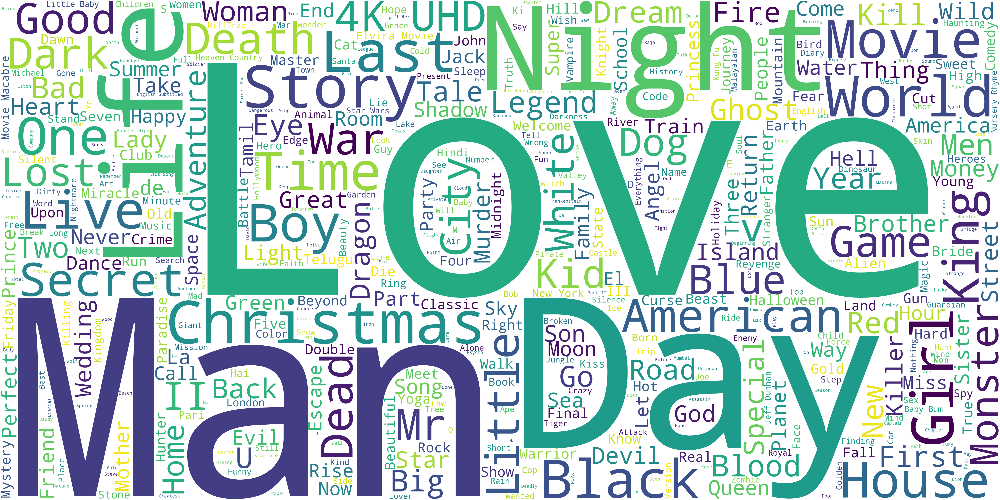

IMDB: Revenue vs. Rating by Genre
IMDB: Rating Distribution (KDE)
IMDB: Top 10 Genres by Movie Count
IMDB: Top 10 Genres by Average Rating
IMDB: Average Rating by Year
Amazon: Movies Released per Year
Amazon: Top 10 Directors
Amazon: Top 10 Countries
Combined: Top 10 Genres
Combined: Word Cloud of Titles

Interactive Dashboard